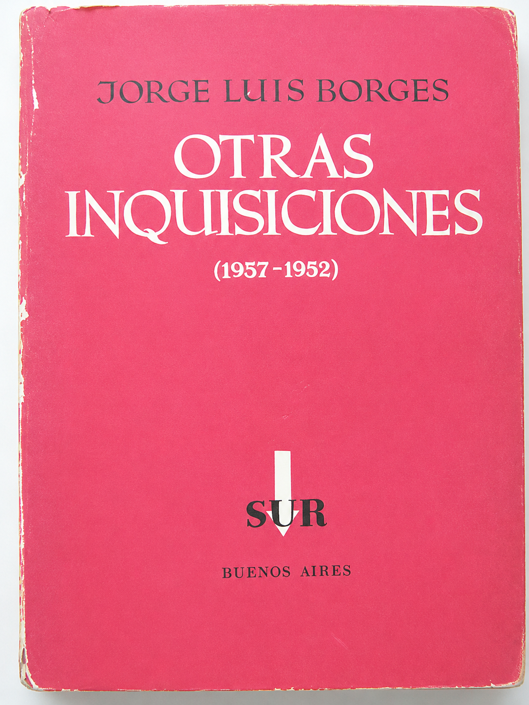

Cargando entorno 3D
Flechas para avanzar
01 / 03
✕ VOLVER
‹
›
0
Pregunta de investigación general
Preguntas específicas
01
02
03
04
05
Hipótesis central
⚡ Mapa NBI 3D — Territorio y desigualdad
✕ VOLVER
Q/E
rotar
W/S
avanzar/retroceder
Z/C
altura
0
cerrar
✕ VOLVER
¿Qué hay "dicho" y "escrito" en torno a la dirección escolar?

Flecha derecha para entrar al poliedro
Punto 02 · Antecedentes: un poliedro
←
→
Defensa tesis doctoral — Elías Aguirre — Julio 2026
01
◈ Ver PREGUNTAS E HIPÓTESIS
⚡ Explorar mapa NBI 3D
◆ Ver poliedro
★ FIN
Arrastrando gema
Soltá el mouse para fijar posición
×
Flechas ← → para navegar · Arrastrá para rotar · Scroll para zoom
← Anterior
Siguiente →
▶ Auto
⛶
🔈